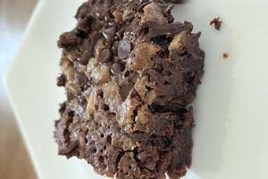

Brownies

Description
This is a delicious banana bread recipe
made with love
Ingredients
- All purpose flour
- Salt
- Butter
- White Sugar
- Eggs
- Vanilla Extract
- Cocoa Powder
- Baking powder
Steps
- Preheat oven to 350 degrees F.
- In a large saucepan, melt 1/2 cup butter.
- Remove from heat, and stir in sugar, eggs, and 1 teaspoon vanilla. Beat in 1/3 cup cocoa, 1/2 cup flour, salt, and baking powder.
- Spread batter into prepared pan.
- Bake in preheated oven for 25 to 30 minutes
Back to Top